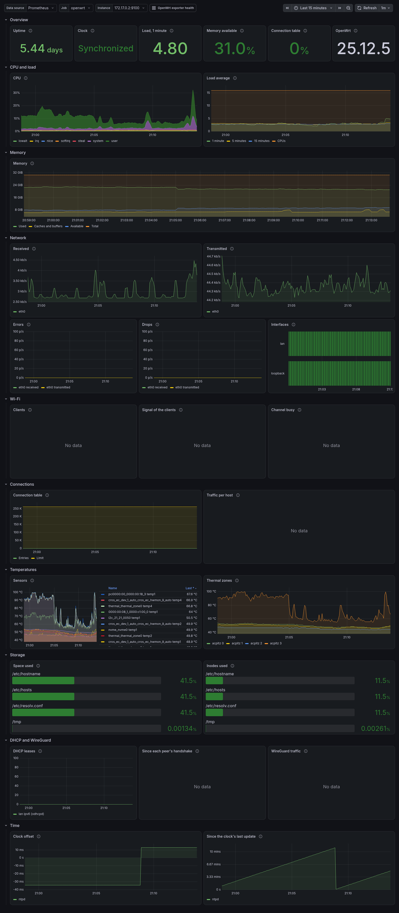
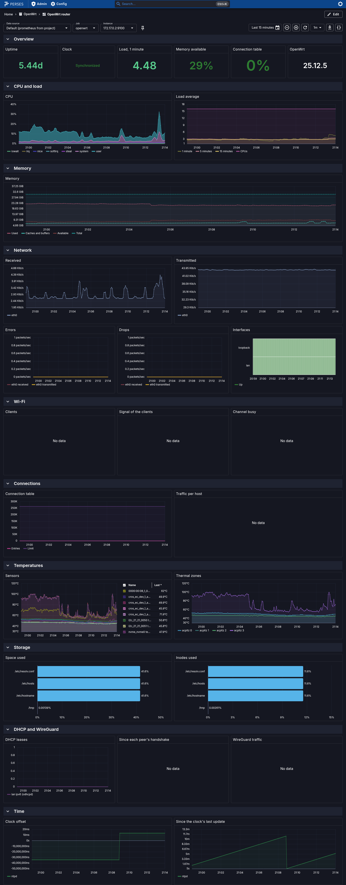
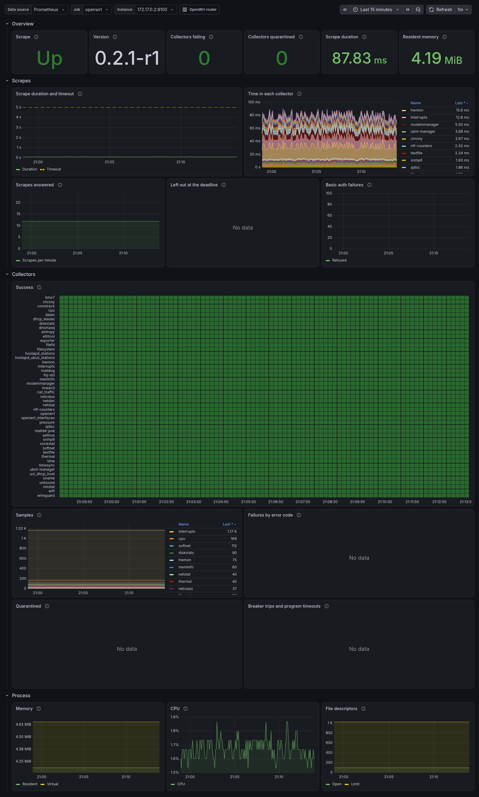
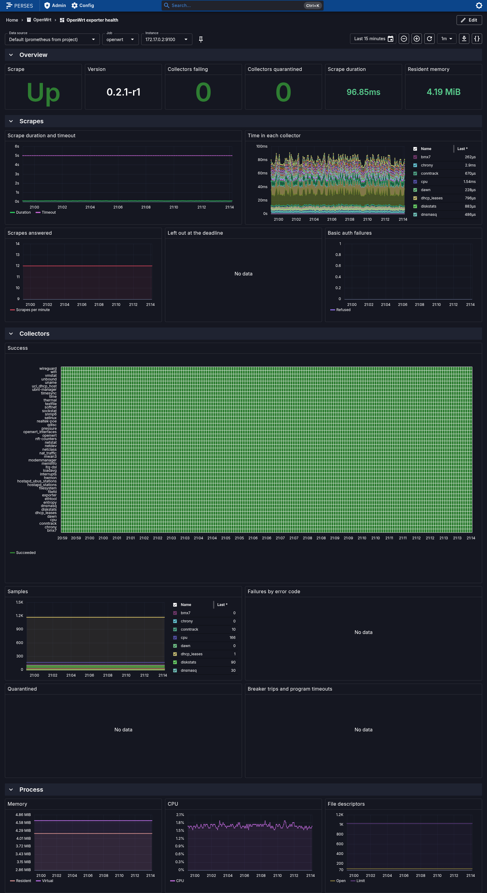

How to Monitor a Router with the Bundled Dashboards and Alerts¶
The exporter comes with alerting rules and dashboards. They are in monitoring/, in the repository and in each release's tarball:
| File | What it is |
|---|---|
monitoring/prometheus/exporter.rules.yml |
Alerts on the exporter's own health: the target down, a collector failing or quarantined, scrapes too slow for their timeout. |
monitoring/prometheus/router.rules.yml |
Alerts on a router's basics: the connection table, memory, filesystems, temperatures, the WAN, Wi-Fi radios, the clock, the DHCP pool. |
monitoring/prometheus/tests/ |
The rules' tests, for promtool test rules and vmalert-tool unittest. |
monitoring/grafana/ |
The dashboards OpenWrt router and OpenWrt exporter health, for Grafana. |
monitoring/perses/ |
The same two dashboards, for Perses. |
This guide loads them into Prometheus or VictoriaMetrics, Grafana and Perses. It then says what each alert means and what to do about it.
Prerequisites¶
- A Prometheus, or a VictoriaMetrics with vmagent, that scrapes the router: see Monitor a router with Prometheus. The rules and dashboards work for every router the server scrapes, whatever you named the jobs. They find this exporter's targets by the metrics it writes, and leave other targets alone. See Which targets the alerts take.
- The collectors whose panels and alerts you want. If a collector is not installed, its panels show no data and its alerts never fire. Nothing else breaks. See Choosing collectors.
- A copy of
monitoring/.
1. Load the rules into Prometheus¶
Copy the rule files where Prometheus reads its config, and name them in prometheus.yml:
rule_files:
- /etc/prometheus/rules/openwrt/*.rules.yml
alerting:
alertmanagers:
- static_configs:
- targets: [ 'alertmanager:9093' ]
No rule names a job or an instance, so the rules load unchanged, whatever you named your scrape jobs. Check the files and reload:
promtool check rules /etc/prometheus/rules/openwrt/*.rules.yml
curl -X POST http://localhost:9090/-/reload # with --web.enable-lifecycle; or send Prometheus SIGHUP
Run Prometheus with --enable-feature=extra-scrape-metrics. With it, Prometheus writes scrape_timeout_seconds. OpenWrtExporterScrapeSlow and the Scrape duration and timeout panel compare each scrape's duration with it. Without the flag, the alert assumes Prometheus's default timeout of 10 seconds, and the panel shows only the duration.
Each alert carries severity: critical or severity: warning, for Alertmanager's routes.
2. Or load them into VictoriaMetrics¶
vmalert reads the same files, unchanged:
vmalert -rule='/etc/vmalert/openwrt/*.rules.yml' \
-datasource.url=http://victoriametrics:8428 \
-remoteWrite.url=http://victoriametrics:8428 \
-notifier.url=http://alertmanager:9093
What differs from Prometheus:
- vmagent writes
scrape_timeout_secondsfor every target, without a flag. OpenWrtExporterDownlooks for the exporter'sucode_prometheus_exporter_build_infoover the last 7 days. MetricsQL'smax_over_time, like PromQL's, ignores the staleness markers that a failed scrape writes.- The description of
OpenWrtExporterCollectorFailingruns a query (query,sortByLabel). Both servers' templates can do this. make monitoring-checkalso loads the rules withvmalert -dryRunand runs their tests withvmalert-tool unittest, so the rules keep working in VictoriaMetrics.- In Grafana and in Perses, the dashboards take VictoriaMetrics as a Prometheus data source. MetricsQL runs their PromQL.
3. Import the dashboards into Grafana¶
Each dashboard picks its data source, job and instance from variables at its top, so either way below imports it unchanged. The job and instance lists hold the targets that wrote the exporter's ucode_prometheus_exporter_build_info in the dashboard's time range. A node_exporter's targets are not among them.
- By hand: Dashboards → New → Import, upload
monitoring/grafana/openwrt-router.json, thenexporter-health.json. -
Provisioned: copy the two files into a directory Grafana reads, and add a provider in
/etc/grafana/provisioning/dashboards/openwrt.yaml:apiVersion: 1 providers: - name: openwrt folder: OpenWrt type: file options: path: /var/lib/grafana/dashboards/openwrt
A link at the top of each dashboard opens the other one, for the same router.
4. Apply the dashboards to Perses¶
The dashboards take their data source from a variable. It lists the project's Prometheus data sources and the global ones, so you need one of either. Then log percli in to your Perses and apply the dashboards:
percli login https://perses.example.net
percli apply -f monitoring/perses/openwrt-router.yaml --project <project>
percli apply -f monitoring/perses/exporter-health.yaml --project <project>
To check a dashboard against your server's plugins first, run percli lint -f <file> --online.
5. Change a threshold¶
Each threshold is in its rule's expression. A comment above the rule says what it means. Edit the threshold there and in the rule's test in monitoring/prometheus/tests/, then run the tests:
promtool test rules monitoring/prometheus/tests/*.test.yml
In a checkout of the repository, make monitoring-check runs the tests along with every other check: see Make targets. It refuses a rule that matches a job or an instance, such as up{job="openwrt"}. To allow one, put a comment above or in the rule that says monitoring-check: allow-target-matcher and why.
What each alert means¶
The exporter's health¶
Error codes lists the failures behind these alerts. Troubleshooting says how to find them on the router.
| Alert | Severity | Fires when | Do |
|---|---|---|---|
OpenWrtExporterDown |
critical | up has been 0 for 5 minutes, of a target that wrote the exporter's ucode_prometheus_exporter_build_info in the last 7 days, whatever its job is called: the router or the exporter is down, the scrape timed out, or basic auth refused the scraper. A target that never answered, or that has been down for more than 7 days, does not fire it: see Which targets the alerts take. |
service prometheus-exporter status on the router; Prometheus's Targets page says why the scrape failed. See Prometheus cannot scrape it. |
OpenWrtExporterCollectorFailing |
warning | A collector's node_scrape_collector_success has been 0 for 15 minutes: it failed, was quarantined or was left out at the deadline in every scrape. The description lists its failures since the service started, by error code. A collector with nothing to observe succeeds, and never fires it. |
service prometheus-exporter check runs it now and says why it fails. See A collector fails. |
OpenWrtExporterCollectorQuarantined |
warning | A collector's circuit breaker tripped in the last 15 minutes: it hung, was killed, ran over its budget, had a program killed at its timeout, or failed three scrapes in a row. It is left out for 1 to 32 scrapes, then tried again. | check says what tripped it, and when it is tried again. See A collector is quarantined and About deadlines and circuit breakers. |
OpenWrtExporterDeadlineSkips |
warning | The scrape deadline left a collector out, or killed its program, in more than 2 scrapes of 30 minutes (SCRAPE_DEADLINE). The first scrape after a restart can be late once. |
The scrapes need more time than the job's scrape_timeout: scrape the slow collector in a job of its own with a longer timeout, or raise the job's. See Collectors are left out at the deadline. |
OpenWrtExporterProgramTimeouts |
warning | A collector's program was killed at its timeout in the last 30 minutes (COMMAND_TIMEOUT). |
Give it more time, How to give programs more time, or find why the program hangs: a radio or a daemon that does not answer. |
OpenWrtExporterAuthFailures |
warning | Basic auth refused more than 5 requests in 15 minutes. A scraper with the wrong password is OpenWrtExporterDown instead. |
A script or a scraper with an old password, or someone guessing it: keep the port to the scrapers, How to listen on the LAN. |
OpenWrtExporterScrapeSlow |
warning | Scrapes took more than 80% of the scraper's timeout for 15 minutes. The exporter answers in time by leaving the slowest collectors out, so they are next. | The Time in each collector panel of OpenWrt exporter health shows which collector takes the time. As for deadline skips. |
The router¶
| Alert | Severity | Fires when | Do |
|---|---|---|---|
OpenWrtConntrackTableNearlyFull |
warning | The connection table has been more than 80% full for 10 minutes. A full table drops new connections. | Raise net.netfilter.nf_conntrack_max, or find the host that opens them: nat_traffic's Traffic per host panel. |
OpenWrtMemoryLow |
warning | Less than 10% of the memory has been available for 10 minutes. | /tmp and the log are memory too. Find what grew: top, du -sh /tmp/*. |
OpenWrtFilesystemNearlyFull |
warning | A writable filesystem has had less than 10% of its space available for 15 minutes. Read-only ones, as the squashfs root, are left out. | On the overlay, remove packages or files; on /tmp, what fills it. |
OpenWrtFilesystemOutOfInodes |
warning | A writable filesystem has had less than 10% of its inodes free for 15 minutes; one that counts none, as jffs2, is left out. | Many small files: a cache or a spool that grows. |
OpenWrtTemperatureAboveMax |
warning | A hwmon sensor has read at or above its chip's own maximum for 5 minutes. Some chips throttle there, as mt76's Wi-Fi radios. | Check the airflow, and where the device stands. |
OpenWrtTemperatureCritical |
critical | A hwmon sensor has read at or above its chip's critical temperature for a minute: the hardware may shut down. | As above, now. |
OpenWrtThermalZoneThrottling |
warning | A thermal zone has been at or above its passive trip point for 5 minutes: the kernel slows the CPU to cool it. | As above. |
OpenWrtThermalZoneNearCritical |
critical | A thermal zone has been within 10 °C of its critical trip point (node_thermal_zone_critical_celsius) for a minute: the kernel shuts the router down at it. |
As above, at once: a fan stopped, a vent blocked, a router in the sun. |
OpenWrtWanDown |
critical | The logical interface wan has been down for 5 minutes. Name yours in the expression: wan\|wan6, wwan. |
ifstatus wan on the router; node_openwrt_interface_errors counts the errors netifd holds for it. |
OpenWrtWifiRadioDown |
warning | A Wi-Fi radio the wireless config enables has had no network up for 10 minutes (node_wifi_radio_up); one disabled on purpose (node_wifi_radio_disabled) is left out. |
wifi status on the router: its driver or hostapd failed, or none of its networks is enabled. |
OpenWrtClockNotSynchronized |
warning | The NTP daemon has not had the clock synchronized for 30 minutes. | No NTP server answers, or none is set: System → System → Time Synchronization in LuCI. |
OpenWrtDhcpPoolNearlyExhausted |
warning | An interface has had 90% or more of its DHCPv4 pool leased for 15 minutes: dnsmasq's and odhcpd's leases over node_openwrt_dhcp_pool_size, which dhcp_leases works out from the interface's start and limit in /etc/config/dhcp and its subnet. |
Raise the interface's limit in /etc/config/dhcp, or shorten its leasetime. |
Which targets the alerts take¶
No rule names a job or an instance. Instead, each rule takes the targets that write ucode_prometheus_exporter_build_info. Only this exporter writes it, and every scrape has it, whatever collect[] selects. So:
- The rules load unchanged, whatever you named the scrape jobs.
- A Linux server's node_exporter in the same Prometheus fires none of them, even though it also writes
node_memory_MemAvailable_bytesornode_scrape_collector_success.
OpenWrtExporterDown cannot look at the current ucode_prometheus_exporter_build_info. A target that does not answer writes nothing, and its series went stale with the failed scrape. So the alert looks over the last 7 days instead, with max_over_time(ucode_prometheus_exporter_build_info[7d]). It fires for a target that is down and wrote the metric in that time:
- 7 days means a router that is down over a weekend, or while you are away for a week, still alerts when someone looks. After 7 days, the alert no longer knows the target as this exporter's and resolves, even though the router is still down. Each evaluation reads 7 days of one series per target: 10,080 samples at one scrape a minute. If Prometheus keeps less than 7 days, the alert looks back as far as Prometheus keeps.
- A target that never answered never wrote the metric. This happens when you add a target with a wrong address, port or password. The alert cannot tell it from another exporter's target, so it does not fire. When you add a router, check the Targets page of Prometheus, or of vmagent.
- A target removed from the scrape config has no
upat all, so it fires nothing, as in any Prometheus.
To alert on a job's targets whatever they run, keep a rule of your own: up{job="<your job>"} == 0.
The dashboards¶
OpenWrt router¶
This dashboard shows a router or an access point. At the top are its uptime, clock, load and release. Below them are panels for:
- CPU and load, and memory
- the network devices' traffic, errors and drops, and the logical interfaces
- the Wi-Fi clients, their signal, and the channels' use
- the connection table and the traffic per host
- the temperatures
- the filesystems' space and inodes
- the DHCP leases
- the WireGuard peers' handshakes and traffic
- the clock's offset


The lab (make lab) has no Wi-Fi radio, no WireGuard interface and no firewall. Those panels show no data there, as on a router without those collectors.
OpenWrt exporter health¶
This dashboard shows the exporter itself:
- whether its scrapes succeed, and its version
- how many collectors fail or are quarantined
- each scrape's duration against the scraper's timeout, and the time spent in each collector
- each collector's success, samples, and failures by error code
- the circuit breakers and the deadline
- the memory, CPU and file descriptors of the uhttpd instance that serves the scrapes
The counters come from the exporter collector, in the base package. They restart at 0 when the service restarts.


See also¶
- Metrics lists every family the dashboards and alerts use.
make monitoring-checkfails on a family that is not there. - About deadlines and circuit breakers
- Pushing metrics from the router, where nothing can scrape it.